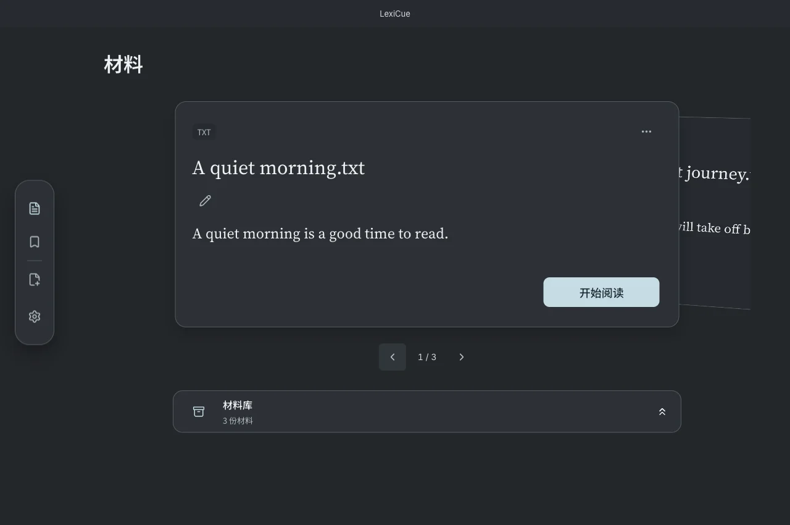

材料与标签
把英文正文、文档与字幕放进自己的阅读材料库。
本页目录
支持的材料
支持 PDF、DOCX、EPUB、Markdown、TXT、SRT、VTT。无可提取文字的扫描 PDF、加密文件和受保护书籍可能无法导入，保存前请检查预览。
同一导入入口可粘贴英文正文或网页链接；网页无法提取时，可复制可见英文正文再粘贴。学习目标仅为英语，界面语言另行设置。
桌面、材料库与标签
正在读的材料留在桌面，暂时不读的收进材料库，之后可以重新放回。按标题搜索或用标签筛选，颜色帮助区分材料组；删除标签不会删除材料。材料的“更多”菜单提供“删除材料”，确认后删除阅读内容，已保存的原句、释义和笔记仍保留。
材料库每页显示 20 项，可搜索标题或来源、按标签筛选，并从标题栏调整排序。点击页码可直接跳页。删除材料会保留已保存的原句、释义和笔记，但无法再返回被删除的原文。


YouTube 字幕
粘贴 YouTube 链接，检查可用英文字幕后确认导入。可用性取决于视频和平台；iPhone 使用公开英文字幕，桌面可在“设置 → 字幕”配置浏览器会话、查看工具诊断。
相关操作工具：字幕
备份
在“设置 → 备份”导出或恢复学习资料。恢复前阅读确认提示，并保存一份独立副本。
相关操作资料：备份与词典